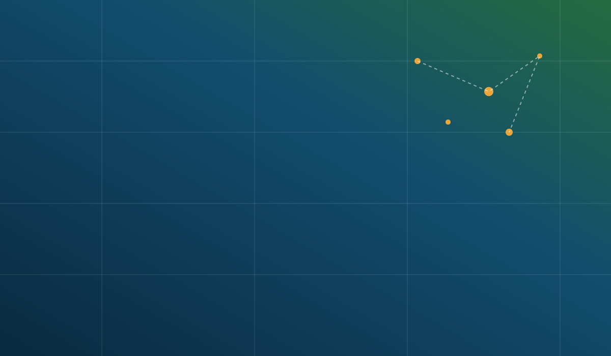

Lymphatic Filariasis
Mosquito-borne infection targeted through annual preventive chemotherapy in endemic districts.
We envision a Tanzania free from the burden of neglected tropical diseases — where every district, however remote, has access to the prevention and treatment it needs.
The Neglected Tropical Diseases Control Programme (NTDCP), under the Ministry of Health, leads Tanzania's efforts to control, eliminate, and where possible, eradicate the neglected tropical diseases that continue to affect the poorest and most rural communities.
Our work spans mass drug administration, disease mapping, morbidity management, water and sanitation collaboration, and operational research — carried out with district health teams and international partners across the country.
Reaching every endemic district with mapped, targeted interventions.
Coordinated mass drug administration rounds delivered on schedule.
Community drug distributors and health workers on the front line.
Surveillance and prevalence data guide every treatment cycle.
"Every district we reach with treatment is a step closer to communities free of preventable suffering. This programme exists because of the health workers who carry it out village by village."
Programme Manager Neglected Tropical Diseases Control ProgrammeDistrict-by-district prevalence data guiding treatment priorities.
Learn More → GuidelinesNational protocols for MDA, morbidity management and reporting.
Learn More → Capacity BuildingEquipping health workers to deliver and monitor interventions.
Learn More → PublicationsAnnual reports, fact sheets and technical publications.
Learn More → CollaborationWorking with WHO, NGOs and international research bodies.
Learn More →Mosquito-borne infection targeted through annual preventive chemotherapy in endemic districts.
Water-borne parasitic disease controlled through school-based deworming and WASH programmes.
Intestinal worms managed through mass deworming of school-age and pre-school children.
Leading infectious cause of blindness, addressed through the SAFE strategy in affected regions.
Community drug distributors delivered combination therapy across newly mapped wards.
District teams collected prevalence data to guide the next treatment cycle.
A five-day training equipped frontline staff to manage lymphoedema cases.
Annual school-based deworming was carried out in coordination with the education sector.

Minister of Health launches the 2026 school deworming campaign in Dodoma.
Subscribe for programme updates, event alerts, and new publications straight to your inbox.